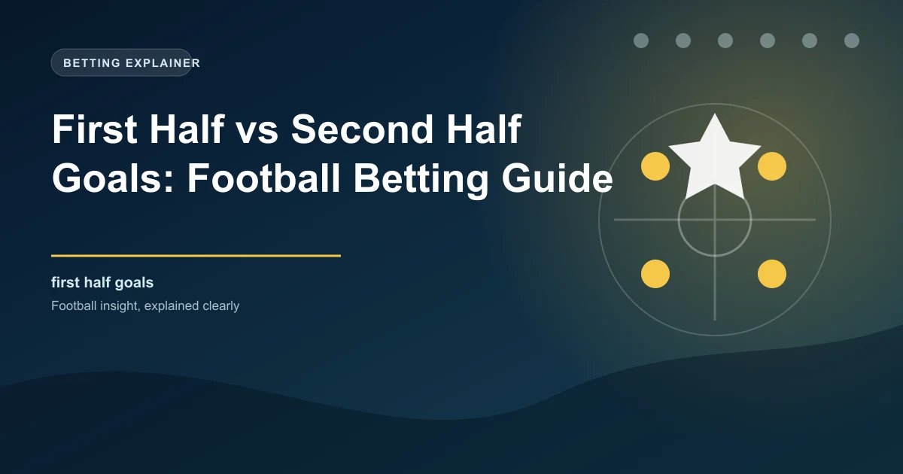

When goals are scored matters as much as how many are scored. Football matches follow distinct timing patterns, and understanding these patterns gives you an edge in half-time betting markets, second-half goals markets, and even full-time goals predictions. Some teams score early, some score late, and some wait until the second half to turn matches around.
This guide breaks down the timing of goals in football, the patterns that shape when goals occur, and how to use this knowledge to find value in timing-based betting markets.
Across Europe's top five leagues, approximately 40% to 44% of all goals are scored in the first half. That means the majority of goals come after the break. However, this average hides significant variation between teams, leagues, and match situations.
Several factors influence first-half goal output:
The first 15 minutes of a match are particularly interesting. Research shows that the opening phase of a match produces a disproportionate number of goals relative to its duration. This is because teams are still finding their rhythm, defensive concentration is not yet at peak levels, and early mistakes are more common.
The second half consistently produces more goals than the first. Across major leagues, approximately 56% to 60% of goals are scored after half-time. This pattern holds across virtually every league and competition, making it one of the most reliable trends in football.
Several reasons explain why more goals come in the second half:
The period from the 75th minute to the final whistle is the most goal-rich period in football. Across top leagues, roughly 30% of all goals are scored in the final 15 minutes plus added time. This is where matches are decided and where the most dramatic comebacks happen.
Not all teams follow the same timing patterns. Some teams are prolific in the first half while others are second-half specialists. Identifying these patterns is crucial for timing-based betting.
Teams that score early tend to share certain characteristics:
When identifying early-scoring teams, look at their first-half goals scored per game and the percentage of their goals scored before the 30th minute. Teams scoring 50% or more of their goals in the first half are strong candidates for first-half goals markets.
Teams that score later in matches also have identifiable traits:
Teams scoring 60% or more of their goals after the 60th minute are second-half specialists. These teams are ideal candidates for second-half goals markets and Over 0.5 second-half goals bets.
Half-time is the most significant tactical inflection point in a football match. Managers use the 15-minute break to analyse what is happening, make adjustments, and motivate their players. These changes directly affect when goals are scored.
When a team trails at half-time, the manager typically makes attacking changes. This can include:
These changes open up the match and create more goal-scoring opportunities. Matches where one team trails at half-time produce significantly more second-half goals than level matches.
Teams leading at half-time often become more defensive to protect their advantage. This can reduce second-half goal output. However, some managers instruct their teams to press for a second goal to kill the match. The managerial philosophy matters greatly here.
Teams managed by cautious, defensive-minded managers tend to see fewer second-half goals when leading. Teams managed by attack-minded managers may continue scoring even after taking the lead.
When the score is level at half-time, both managers may make changes to try to gain an advantage. This often leads to a more open, attacking second half with more goals. Level half-time scores are strong indicators of second-half goals because both teams push for a winner.
Added time has become increasingly important in modern football. Since the 2022 World Cup, referees have been instructed to add more time for stoppages, substitutions, injuries, and time-wasting. This has extended matches significantly and created a new, goal-rich period.
The numbers are striking. Since the introduction of stricter added time rules, the percentage of goals scored in added time has increased. Matches now regularly feature 5 to 8 minutes of added time, and goals in this period are more common than many bettors realise.
Several factors make added time a high-scoring period:
For betting, added time goals create opportunities in live markets. If a match is level in the 85th minute and both teams are pushing, the probability of a goal in added time is higher than many bookmakers price it.
The half-time result market is one of the most straightforward timing-based betting markets. You simply predict whether the home team, away team, or neither team will be leading at half-time. Understanding the patterns in this market helps you find value.
Key patterns in half-time results:
The half-time full-time double result market offers higher odds but requires two correct predictions. If you can identify matches where the half-time result is predictable, this market offers significant value.
Understanding when goals are scored gives you access to several valuable betting strategies.
Bet on Over 0.5 second-half goals in matches where both teams are evenly matched, motivation is high, and defensive fatigue is likely. Matches that are level at half-time between attack-minded teams are ideal candidates.
Bet on Over 0.5 first-half goals when high-tempo, aggressive teams meet early in the season or after a break. Teams that start matches quickly tend to produce first-half goals more consistently. Avoid this bet when defensive teams meet, as these matches tend to produce first-half draws.
Some bookmakers offer markets on when the first goal will be scored. If you identify teams that score early, bet on goals before the 30th minute. For late-scoring teams, bet on goals after the 60th minute. These markets often offer better value than standard goals markets because most bettors do not research timing patterns.
Use timing data in live betting. If a match is goalless at 60 minutes between two attack-minded teams, the probability of goals increases significantly in the final 30 minutes. Live Over 1.5 goals bets placed around the 60th minute can offer value because the odds still reflect the early goalless period.
Combine half-time predictions with full-time predictions for higher odds. If you identify a match where a strong home team is likely to lead at half-time and win the full match, the half-time/full-time market offers significantly better odds than a simple home win bet.
The most reliable timing bet is the second-half goals market in level matches between evenly-matched, attack-minded teams. When both teams are pushing for a win, fatigue and desperation combine to produce goals in the final 30 minutes. Look for matches where the half-time result is likely to be 0-0 or 1-1, and bet on Over 0.5 or Over 1.5 second-half goals. The odds for second-half goals markets are often more generous than full-match goals markets because most bettors focus on the full 90 minutes.
Different leagues have different timing profiles. Some leagues produce more first-half goals while others see a higher concentration of second-half scoring.
Understanding when goals are scored is a powerful tool for football bettors. The second half consistently produces more goals, late goals are increasingly common due to added time, and individual teams have identifiable timing patterns that create betting opportunities.
Use timing data alongside traditional match analysis to find value in half-time markets, second-half goals markets, and goal time range bets. The bettors who pay attention to timing details have access to markets that most casual bettors ignore, creating a genuine edge.
Check our free daily football predictions to apply these strategies.
Generate optimized accumulator combinations from today's AI-powered predictions. Set your target odds and get instant ticket suggestions.
Free Ticket Builder →